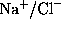

Overview
SOLVATE is a program to construct an atomic
solvent environment model for a given atomic macromolecule model
(solute) for use in molecular dynamics simulations.
SOLVATE
- generates irregularly-shaped solvent volumes, adapted to a given
solute's structure,
- allows efficient computation of boundary forces as required in
molecular dynamics simulations,
- guarantees a minimal solute-boundary-distance,
- allows to specify a minimum solvent surface curvature in order
to avoid `flat' surface regions,
- generates `disordered' (= fluid) water, not a grid of water molecules
(= ice),
- locally minimizes the positions of all water molecules,
- optionally places salt ions () obeying
a Debye-Hückel distribution,
- optionally places (and marks) buried water molecules,
- and is X-PLOR/CHARMm-compatible, i.e., input and output is in pdb-/psf-format.
Helmut Grubmueller
Wed Jun 19 19:00:00 MET DST 1996